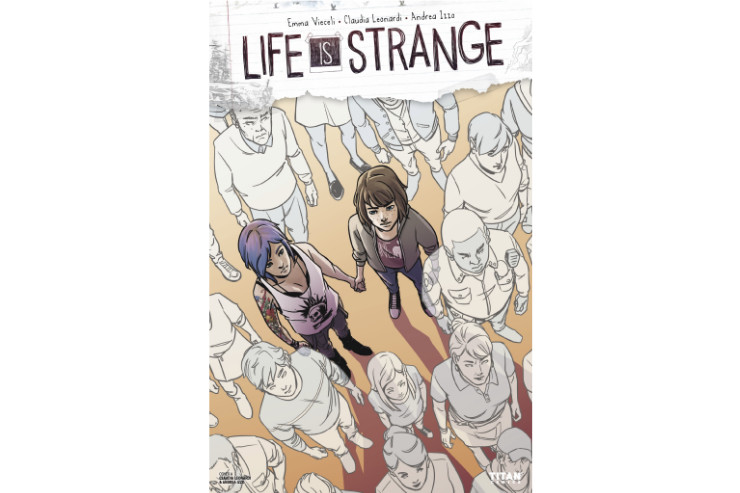
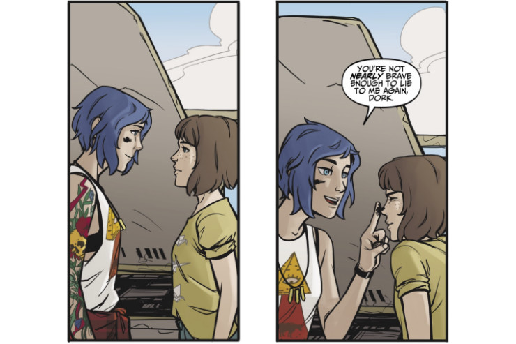
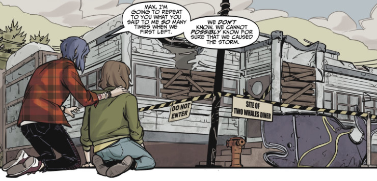
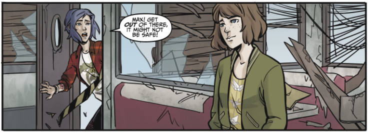
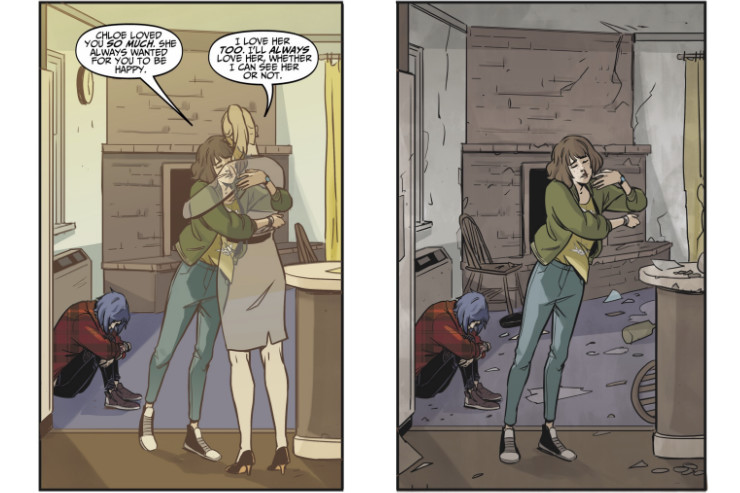
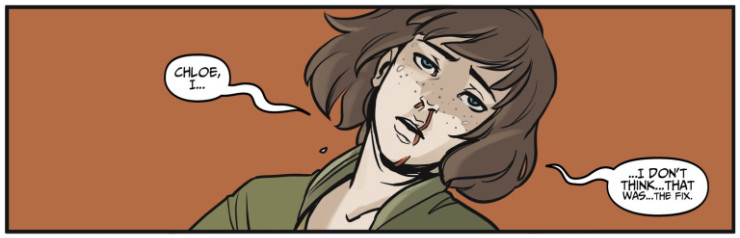

Life is Strange comic book vol. 2 (Dust #2)
Yesterday I wrote a review of the first issue of Life is Strange comic book. Today I faced its continuation in which Max and Chloe return to Arcadia Bay a year after the storm that changed their lives forever. I opened the second issue with anticipation but also fear. I had no idea what to expect, yet I had a strange feeling that this was going to be an emotional rollercoaster. I was right.
As before, I read this comic book not knowing anything about the content of following issues (the last one being published merely a day ago). You will be able to see all my reviews here.
Let’s start with the cover. It shows Max and Chloe standing in the crowd of white, semi-translucent silhouettes. The connection to the casualties of Arcadia Bay’s tornado is pretty obvious, as they look like ghosts (at least here Chloe is shown in the same way as Max, unlike on the cover of the first issue). Most of them are strangers, but I recognised Joyce, Warren and officer Berry. Then we’ve got a two-page recap of the events from the first issue. It is worth mentioning that there are some things I missed when I was reading the first comic book. While I noticed some strange things happening and changes in Chloe’s outfit and surroundings, I did not notice that in one scene the colour of Chloe’s hair changed (well, technically I did notice a different streak of colour, but I assumed it was just a matter of artistic interpretation of the shading). I also somehow didn’t catch that the memorial event in Arcadia Bay was held by the Prescotts.
 At least they did not present Chloe as some scary punk ghost
Just like in the first volume, the leading page contains Max’s thoughts in a form of a retrospection. This time however we can’t see Max, only darkness in which a swarm of blue butterflies rises slowly.
Following the road back to Arcadia Bay felt like tracing a vein right back to the heart of the storm we’d escaped a year ago. Our time in Seattle, our new friends,the gig we’d been at the night before; they all felt away with every mile we traveled. What replaced them was everything we’d tried so hard not to feel.
That was short yet powerful statement. I’m glad it appeared, though, because one thing that seemed a bit unrealistic to me in the first issue was the fact that both Max and Chloe did not show any sign of psychological trauma after seeing how a huge tornado destroyed a town with nearly 5000 inhabitants, including their loved ones and friends. Sure, one can argue that a year could be enough time for them to heal, yet still the lack of these feelings in the first comic book was rather unusual.
The next scene shows bored Max playing with the Elvis figurine at the dashboard of Chloe’s battered pickup. There’s short but funny exchange going on between Max and Chloe, which I totally love, because it reminds me so much of the game and Chloe’s specific sense of humour. Although the conversation inevitably reaches the darker topic of Arcadia Bay and the tornado. There is one thing Max said that I found particularly unnerving:
We’re not even at Arcadia Bay yet… and I feel like we won’t ever leave it again.
No. I don’t like this at all. It doesn’t matter whether that was only a figurative speech, I don’t even want to consider the possibility that my two favourite girls are not coming back to Seattle safe and sound. But before I started overthinking Max’s word, a classic road trip event happened: Chloe’s truck decided to go on vacations in the middle of nowhere. The discussion between Max and Chloe was priceless here (no pun intended).
“Shitting shitbags of shit.”
“So. Is it okay?”
“Sure, Max, it’s great. Trucks are meant to have smoke pouring out of their engines.”
“I was just asking. Can I, uhh, do anything?”
“Wind back time and tell me to fill up the oil? That clearly was a joke and if you do, I’ll kick your ass.”
That was hella awesome, as Chloe would say. At last a moment that could have been taken out straight of the game itself. I noticed already that the second issue of the comic book has more Life is Strange vibe to it than the first one. I suspect it’s because there is only Max, Chloe and the pickup on the road. All three familiar from the game. It’s easier to accept the story in the comic book if one is not forced to see a bunch of newly introduced characters, like in the first part (I tried to give the High Seas a chance, I really did, but I just don’t buy them). One even gets some cute moment when Chloe smeared the tip of Max’s nose with a car oil. It wasn’t a Pricefield thing, but at least it was something. I also appreciate that someone (probably Chloe) tagged the pickup with a permanent marker, naming it the Pirate Ship.
 The second issue of Life is Strange comic book has its cute parts…
When the girls reached Arcadia Bay… well, I did not expect that. The whole town was being renovated with Prescotts’ funds, precisely–with fund from the Nathan Prescott Foundation. Ugh. I know he kind of redeemed himself by calling Max, apologising and trying to warn her about Jefferson, but still, he remains to me that crazy bastard who killed/nearly killed Chloe and killed Rachel.
There was one small thing that bothered me about the Arcadia Bay part. While the graphics and colours used in the comic book are really great, I wished they hadn’t used a plain computer font on the banners and construction site information boards, it just breaks immersion in my opinion, in the same way as using a simple overlay pattern on Chloe’s red shirt, that does not change with the actual orientation of the piece of clothing.
The girls saw a deer on the street and when Max made sure Chloe had seen it, too, I remembered the doe in Life is Strange that was either Rachel’s spirit animal or Rachel’s spirit. I suppose this time it was an ordinary deer, as Rachel doesn’t have any reason to keep her eye on Arcadia Bay, since the storm, “Rachel’s revenge” as Chloe called it in the fifth episode, has already fulfilled its goal.
The next part was utterly sad. My heart broke when I saw Max’s reaction to seeing the ruins of the Two Whales diner. She kneeled on the ground, being unable to hold upright, with her eyes fixed on the nearly demolished building. But Chloe was there for Max, saying all the reassuring words that needed to be said, giving Max the support she desperately needed. It reminded me of the part of Sacrifice Arcadia Bay ending when Max could not stand the view of the town being destroyed anymore and she turned her gaze away, locked in a firm, protective grasp of her girlfriend.
 … but it also has its sad parts, like when Max and Chloe saw what was left of the Two Whales diner a year after the tragedy
Then the weird thing happened again and Max had another vision, seeing the diner in its prime days. Chloe was wearing a different outfit again and the girls met Dana Ward, alive and well. I wasn’t sure if it was only a vision or Max had been actually teleported to an alternative timeline somehow, but the next scene explained everything. Max was standing inside of the destroyed diner, with a strange smile and a distant look, while Chloe, seriously worried, tried to convince her to leave the building, as it wasn’t safe to go there. Trust me, seeing Max in that strange trance was the most disturbing thing I’ve seen in Life is Strange comic book so far.
 The strange, distant look on Max’s face really scared me
When Chloe rushed inside to get Max out of the diner, they joined their hands and… Chloe got sucked into the vision, too. She nearly got to see her mom, but the vision ended and both girls found themselves in destroyed and desolated Two Whales again. That was something new. Until that moment it was only Max who was able to perceive these visions or whatever they should be called. Now Chloe was able to do this, too, with Max’s help.
I still don’t know if these moments are some relics of the alternative timeline, the timeline in which Max did sacrifice Chloe, or if they mean that there might be some sort of time loop coming, forcing Max to make the ultimate choice again, or if it’s something completely different. We are almost halfway through the whole series, in the second issue out of four, but there are still fewer answers than questions.
There was one annoying part of this comic book when the girls left the Two Whales. Chloe was obviously upset by the fact she had heard her mother’s voice and had almost seen her, Max was apologising for keeping her visions and their increasing frequency a secret. Chloe needed some space, but Max pushed her.
Talk to me, Chloe. Are you angry with me?
Insert groan here. That was so cliché it almost hurt. Seriously? This sentence or its variation can be heard in almost every movie or read in every other book. Also, it’s so out of character for Max. In the first issue of the comic book she was thanking the friends from the band for letting her take their photos, which shows she was shy, insecure and introverted. Now she suddenly forces Chloe to share her emotions after such a difficult moment? What the hell? It doesn’t sound very Max.
Chloe decided to go visit her home. That was the hard part. Seeing the place known so well not only from Life is Strange, but from Before The Storm and Farewell, too, lifeless and in ruin, was difficult. I naively hoped to see Joyce in the kitchen, making the girls some pancakes. It did not happen, though.
But something else did. When Max felt she might be getting another vision, she asked Chloe to hold her hand, hoping it would be enough for her to see what Max sees. It didn’t quite work in the expected way. Max could see Joyce, sitting at the table in the living room, mourning after losing Chloe to the fateful shooting in the Blackwell bathroom a year ago. She could see Chloe as well, still holding her hand. But neither Chloe could see or hear Joyce nor she could see or hear her daughter. It was like Max was the only bridge between two timelines, two realities that could not coexist together.
Chloe sat on a floor, hugging her knees, trying to hold back tears.
Max…? Tell her I’m sorry. Tell her… I love her.
 If you didn’t cry seeing this scene, your heart is made of stone
Oh man, the feels… I assure you, I did not cry reading that part. What? What tears on my cheeks? I have no idea what are you talking about…
The last scene shows Max returning fully to the reality with Chloe. She is losing consciousness, blood pouring from her nose.
 This visions of an alternative timeline seem to take a big tool on Max’s health
Okay. The second issue of Life is Strange comic book was far more intense than the first one, and–thanks to the absence of new characters and key plot elements being already established–much more like the original Life is Strange game. It was still too short and ended in the worst possible moment, but I can see some small improvements and potential in here. I’m glad one finally could see that Chloe is not an emotionless robot, but is dealing with her own issues and the loss of her mother (it gives some level of realism and plausibility that were missing in the first part of the comic book). There were some moments showing how important Max is to Chloe and how much she cares about her partner in time, although the whole Pricefield thing is still being treated as an elephant in the room. As before, let me just end with pointing the good and bad things in this issue, in my opinion.
Yay!
- road trip to Arcadia Bay
- Chloe comforting Max in front of Two Whales
- Chloe asking Max to tell Joyce she loved her
- no sign of Pixie, Tammi, Dex and Dwight (it better stays that way)
- the deer
Nay!
- Nathan Prescott Foundation
- Two Whales still in ruin
- no familiar faces in Arcadia Bay
- Max pushing Chloe to talk to her about Chloe’s feelings
- still too short!
Overall summary in three words
retrospective, ambiguous, short